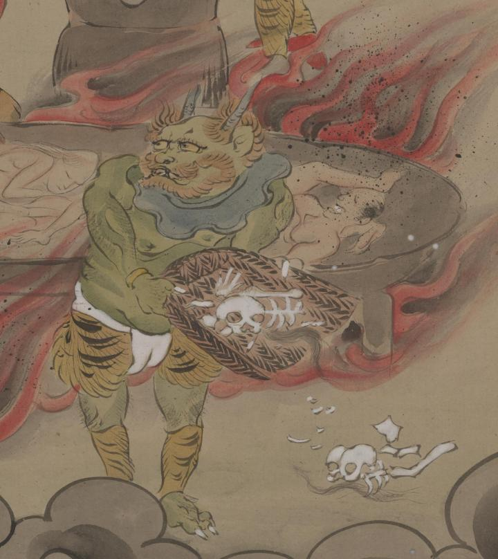

← 图鉴索引

鬼が箕に亡者の骨を入れて持っている。
出典：親書誌：U426_nichibunken_0379：地獄絵図；ジゴク エズ／日付：2014／資源識別子：U426_nichibunken_0379_0001_0011
Copyright (c)2010- International Research Center for Japanese Studies, Kyoto, Japan. All rights reserved.